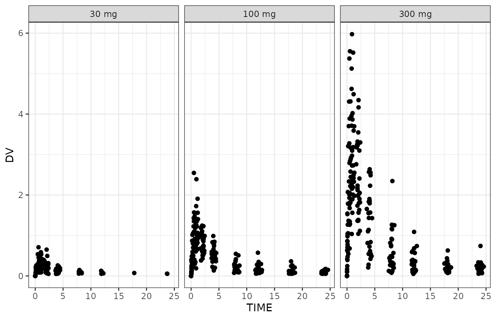
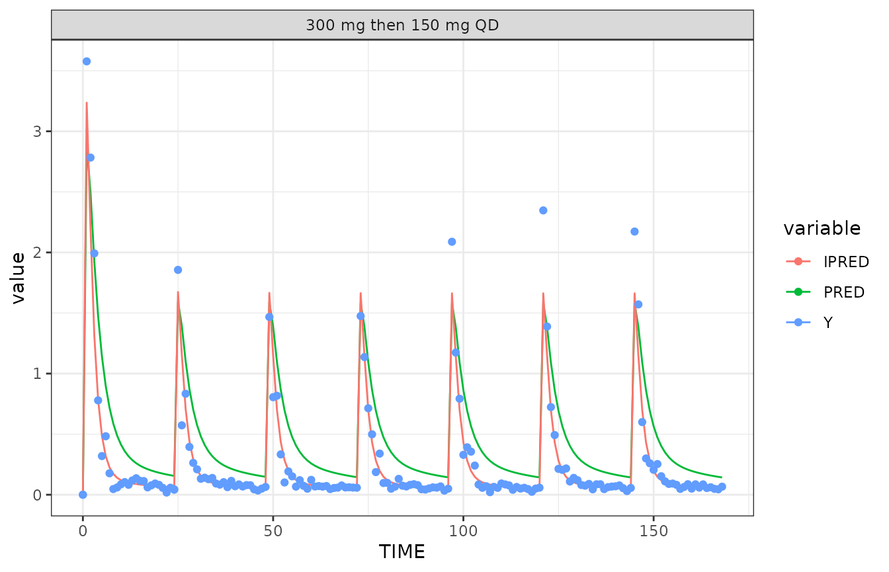
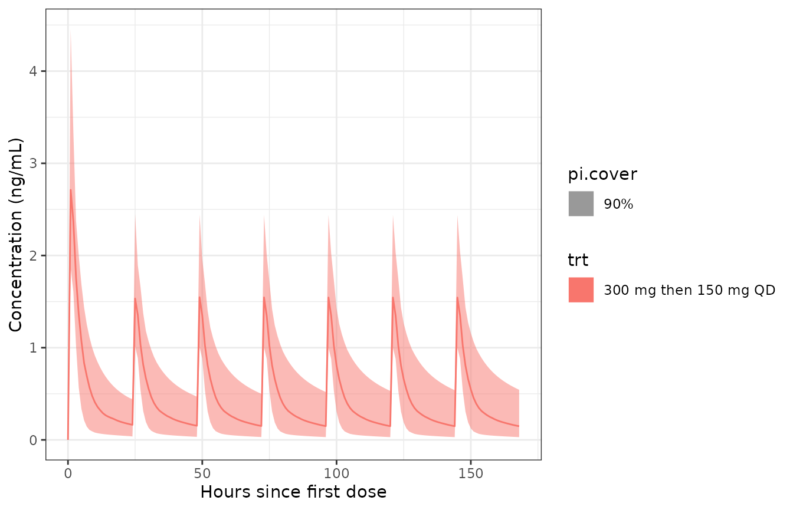
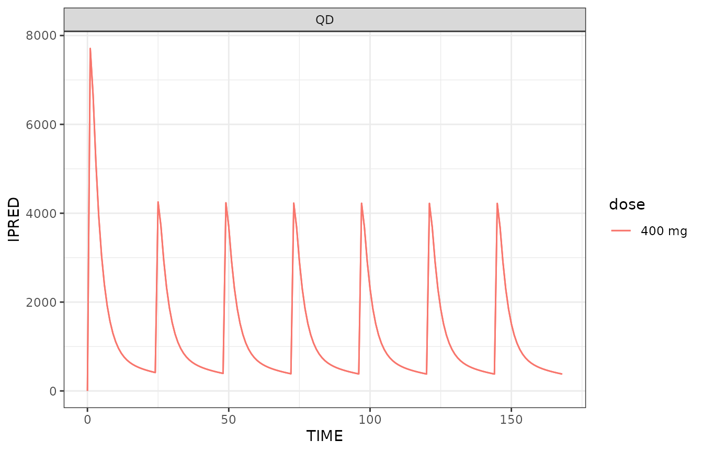
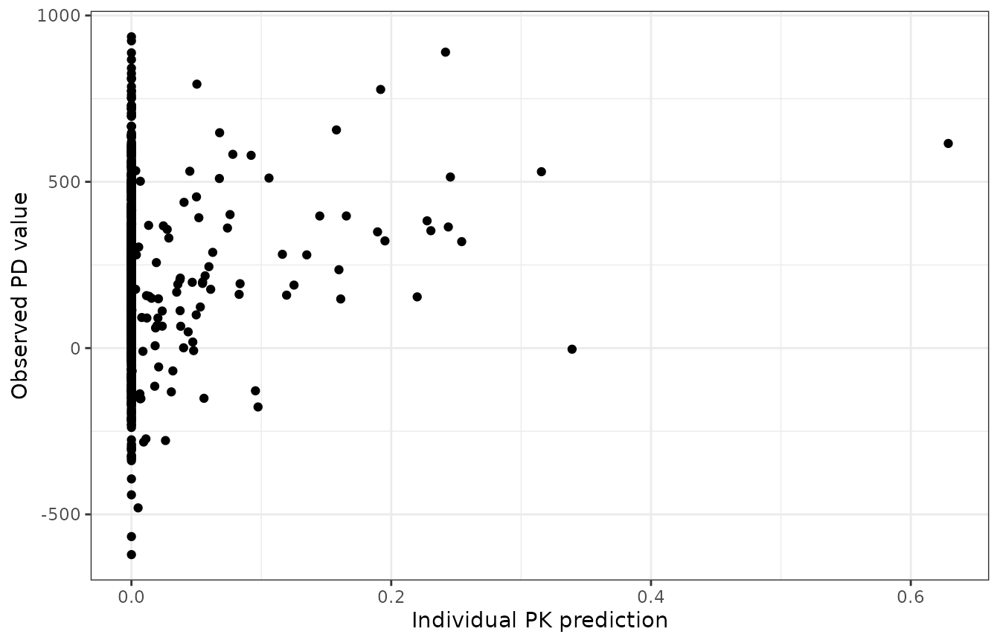
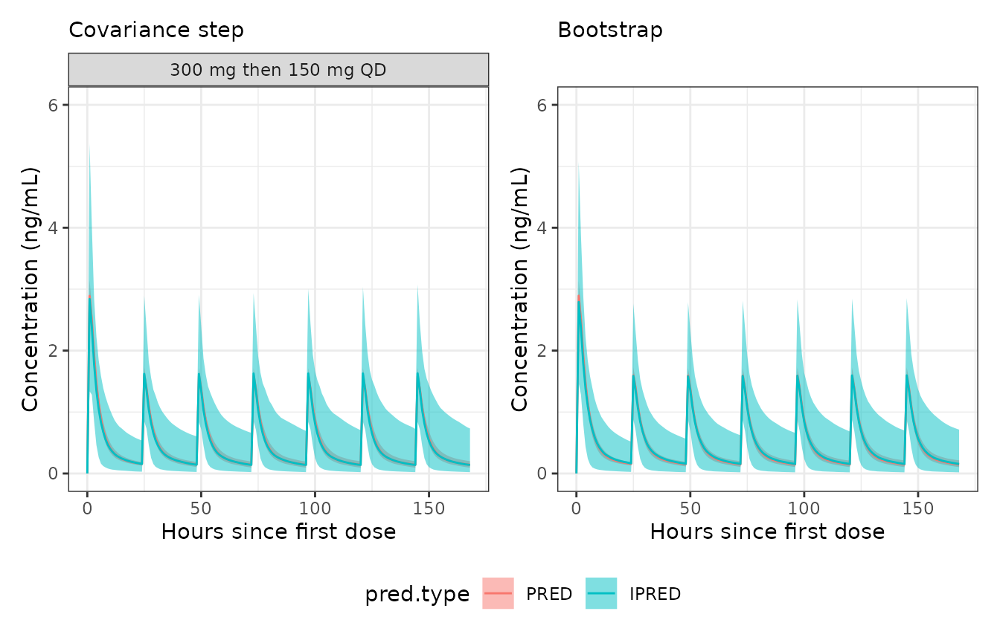

Built 2023-09-15 using NMsim 0.0.2.
Objectives
This vignettes aims at enabling you to
Use
NMsimto simulate Nonmem models with a given input data setDistinguish between and perform the most common types of simulations:
new subjects (default),
typical subjects,
known (estimated) subjects,
simulation with parameter uncertainty
Simulation with parameters modified from the estimated values
Prerequisites
You should have configured NMsim with the path to the
Nonmem installation and maybe also PSN. See NMsim-config.html.
Don’t worry - it is very easy.
Estimation, then simulation
The situation is like this: We collected PK and PD data from a single ascending dose trial on a drug candidate.
#> Model: xgxr021
#>
#> Used tables, contents shown as used/total:
#> file rows columns IDs
#> xgxr021_res.txt 731/731 16/16 90/90
#> xgxr2.rds (input) 731/1502 22/24 90/90
#> (result) 731 38+2 90
#>
#> Input and output data merged by: ROW
#>
#> Distribution of rows on event types in returned data:
#> EVID CMT output result
#> 0 2 641 641
#> 1 1 90 90
#> All All 731 731
A PK model was estimated using Nonmem. We have on file model input
and output control streams (here with extensions .mod and
.lst respetively), parameter estimates (.ext)
and estimated random effects (.phi) are available.
We want to predict exposure in a multiple dose regimen that we are particularly interested in. This is a regimen that we have not studied in clinical trials so far, and we have decided to use population PK simulations for this purpose.
The pop PK model was estimated using an ADVAN subroutine with extravascular dosing in compartment 1 and the central compartment is compartment 2.
It does not matter to NMsim how we create a simulation data set as long as we get it into a data.frame structure. We used functions included with NMsim for the purpose, but you can use anything. We create a regimen with a loading dose of 300 mg followed by 150 QD for 6 days. Notice that the compartment numbers match the compartment numbers that were used when estimating the model.
### multiple dose regimens with loading are easily created with NMcreateDoses too
## We use ADDL+II (either method easy)
doses <- NMcreateDoses(TIME=c(0,24),AMT=c(300,150),addl=data.frame(ADDL=c(0,5),II=c(0,24)),CMT=1)
doses <- transform(doses,trt="300 mg then 150 mg QD")
## Add simulation records - longer for QD regimens
dat.sim <- addEVID2(doses,time.sim=0:(24*7),CMT=2)
## sort data set
setorder(dat.sim,ID,TIME,EVID)We check the simulation data set for various potential issues in
Nonmem data sets using NMdata::NMcheckData and summarize
the number of doses and observations:
NMcheckData(dat.sim,type.data="sim")
#> No findings. Great!
NMexpandDoses(dat.sim) %>%
group_by(ID,trt,EVID,AMT) %>%
summarize(N=length(EVID)) %>%
spread(EVID,N)
#> `summarise()` has grouped output by 'ID', 'trt', 'EVID'. You can override using
#> the `.groups` argument.
#> # A tibble: 3 × 5
#> # Groups: ID, trt [1]
#> ID trt AMT `1` `2`
#> <int> <chr> <dbl> <int> <int>
#> 1 1 300 mg then 150 mg QD 150 6 NA
#> 2 1 300 mg then 150 mg QD 300 1 NA
#> 3 1 300 mg then 150 mg QD NA NA 169
print(as.data.table(dat.sim),topn=5)
#> ID TIME EVID CMT AMT II ADDL MDV trt DV
#> 1: 1 0 1 1 300 0 0 1 300 mg then 150 mg QD NA
#> 2: 1 0 2 2 NA NA NA 1 300 mg then 150 mg QD NA
#> 3: 1 1 2 2 NA NA NA 1 300 mg then 150 mg QD NA
#> 4: 1 2 2 2 NA NA NA 1 300 mg then 150 mg QD NA
#> 5: 1 3 2 2 NA NA NA 1 300 mg then 150 mg QD NA
#> ---
#> 167: 1 164 2 2 NA NA NA 1 300 mg then 150 mg QD NA
#> 168: 1 165 2 2 NA NA NA 1 300 mg then 150 mg QD NA
#> 169: 1 166 2 2 NA NA NA 1 300 mg then 150 mg QD NA
#> 170: 1 167 2 2 NA NA NA 1 300 mg then 150 mg QD NA
#> 171: 1 168 2 2 NA NA NA 1 300 mg then 150 mg QD NASimulation of new subjects
This is the first time we are using NMsim, and we just
want to try the simplest thing we can think of. Simulate a new subject
on the considerd multiple dose regimen with our estimated PK model from
the single dose study.
file.mod <- file.project("nonmem/xgxr021.mod")
simres <- NMsim(file.mod=file.mod,
data=dat.sim)We plot population and individual predictions as the simulations of (in this case) the typical subject and one simulated subject. Residual variability is not simulated in this case. More on that later in this paper.
datl <- as.data.table(simres) |>
melt(measure.vars=cc(PRED,IPRED,Y))
## datl[,type:="Prediction"]
## datl[variable=="Y",type:="Simulation"]
ggplot(datl,aes(TIME,value,colour=variable))+
geom_line(data=function(x)x[variable!="Y"])+
geom_point(data=function(x)x[variable=="Y"])+
facet_wrap(~trt)
The reason we can plot a simulation with residual variability is that
the control stream includes a variable Y defined with
residual variability in $ERROR:
Y=F+F*ERR(1)+ERR(2)Before we continue with that model, we want to compare a simulation
based on this model to another model we are considering.
NMsim can do this and collect the data into one object:
## file.mod <- "../nonmem/xgxr014.mod"
files.2.mod <- file.project(c("nonmem/xgxr021.mod","nonmem/xgxr114.mod"))
simres.2models <- NMsim(file.mod=files.2.mod,
data=dat.sim
)In case multiple models are provided, NMsim simply loops
over them. It does collect all the results, and we can use the
model column to separate the two simulations:
ggplot(simres.2models,aes(TIME,PRED,colour=model))+geom_line()+
facet_wrap(c("trt"),scales="free")
For simplicity, we shall show the rest of the examples for just one model. Any of them could be run on multiple models the same way as shown above.
More subjects
To create a prediction interval based on the selected model, we need
to simulate multiple new subjects. There are two ways to easily obtain
that. One is to repeat (rbind) the simulation input
dataset, one repetetion per new subject, and then update the
ID column to get distinct subjects. The follwing shows how
one could generate 1000 subjects using data.table. (I use
data.table a lot, if you can provide a good way to do this
with tidyverse packages, I am happy to include that instead).
dat.sim.1000 <- NMdata::egdt(
as.data.table(dat.sim)[,!("ID")]
,
data.table(ID=1:1000)
)
dat.sim.1000[,ID:=.GRP,by=.(ID,trt)]
setorder(dat.sim.1000,trt,ID,TIME,EVID)We now simulate 1000 subjects by plugging in this data object:
## file.mod <- file.project("nonmem/xgxr014.mod")
simres.n1000.1 <- NMsim(file.mod=file.mod,
data=dat.sim.1000
)The other way to do this is making use of Nonmem’s
SUBPROBLEMS simulation feature which makes Nonmem rerun the
simulation the specified number of times. Notice that to do this, we use
the dat.sim data without the 1000 replications. We then
make use of the NMREP column generated by
NMdata::NMscanData to redefine the ID
column:
## file.mod <- "../nonmem/xgxr014.mod"
## file.mod <- file.project("nonmem/xgxr014.mod")
simres.n1000.2 <- NMsim(file.mod=file.mod,
data=dat.sim,
subproblems=1000
)
simres.n1000.2 <- as.data.table(simres.n1000.2)[,ID:=.GRP,by=.(NMREP,ID,trt)]The two approaches are computationally about equally fast, the most significant difference probably being in Nonmem reading a smaller or larger simulation input data file. Unless the input dataset becomes very large, it is merely a question of preference of the modeler which one to use. In a case where the simulated patients need different dosing or sample schedules, the manual construction of the data is needed - because it’s not a straightforward replication.
We now plot a prediction interval - in this case based on the results
of the simulation using SUBPROBLEMS; this makes no
difference to how to derive the prediction interval.
simres.pi <- as.data.table(simres.n1000.2)[,setNames(as.list(quantile(IPRED,probs=c(.05,.5,.95))),cc(ll,median,ul)),
by=.(trt,TIME)]
simres.pi$type <- "pi"
simres.pi$pi.cover <- "90%"
p.pi.typ <- ggplot(simres.pi,aes(TIME,fill=trt))+
geom_ribbon(aes(ymin=ll,ymax=ul,alpha=pi.cover))+
geom_line(aes(y=median,colour=trt))+
## facet_wrap(~trt,scales="free_x")+
scale_alpha_manual(values=c("90%"=.5))+
labs(x="Hours since first dose",y="Concentration (ng/mL)")
p.pi.typ
Simulation of a typical subject
A typical subject is here understood as a subject without random
effects, i.e. all ETA’s equal zero. It is important to realize that
“typical” does not have to do with covariates which the user will still
need to control in the model, in the simulation input data, or by a
combination of these. Getting NMsim to run with all ETA’s
equaling zero is this easy:
simres.typ <- NMsim(file.mod=file.mod,
data=dat.sim,
name.sim="typSubj",
method.sim=NMsim_typical)In the first simulation we used PRED from the default
simulation method to get a typical subject simulation. That will work in
many cases, but that depends on the model. The way to run a simulation
with all ETA’s set to 0 is using
method.sim=NMsim_typical.
p.typ <- ggplot(simres.typ,aes(TIME,IPRED,color=trt))+geom_line()+
geom_line(aes(y=PRED))
p.typ
Simulation of known subjects
We sometimes want to simulate the already observed subjects. This
means we want to reuse the estimated random effects (ETA’s) given the
subject ID’s. NMsim has a method for this. The restriction
is that all subjects (values of ID) in the simulation input
data must have been used in the estimation input data.
## base.sim.known <- dat.sim.md[dat.sim.md$DOSE==400,]
base.sim.known <- dat.sim
res.mod <- NMscanData(file.mod)
ids <- data.frame(ID=unique(res.mod$ID))
dat.sim.known <- merge(ids,
as.data.table(base.sim.known)[,setdiff(colnames(base.sim.known),c("ID")),with=FALSE]
)
setorder(dat.sim.known,ID,TIME,EVID)
simres.known <- NMsim(file.mod=file.mod,
data=dat.sim.known,
name.sim="known1",
text.table="PRED IPRED CL V2 KA"
,method.sim=NMsim_known
## ,method.update.inits="nmsim"
## ,path.nonmem="/opt/NONMEM/nm75/run/nmfe75"
)
ggplot(as.data.table(simres.known)[EVID==2],aes(TIME,IPRED,colour=factor(ID)))+
geom_line()+
theme(legend.position="none")
Impute simulation times for building a PK/PD dataset
We also connected some PK data. We want to plot the PD data angainst PK. However, PD was sampled differnetly than PK, and we want to evaluate the individual predictions of the PK model at the individual PD samplng times.
Currently, there is no PD data in the example data used to build this vignette. For a PK model without time-varying covariates, the steps to to generate the data for the simulation are:
- Take dose records from PK model estimation input data
(
pkdos). Just keep necessary columns likeID,TIME,EVID,CMT,AMT,ADDL,II, and any necessary covariates - Take PD data observation records (
pdsamples). Just keepID,TIME, and setEVID=2. - Add a unique row identifier to
pdsamples(an integer row counter, likeROW=1:nrow(pdsamples)) - Stack (
rbindfor data.tables orbind_rowsin tidyverse)pkdosandpdsamplesto one data set (pdsim) - In
pdsim, setDV=NA - Sort
pdsimat least byID,TIMEandEVID. There could be more depending on trial design
In case of time-varying covariates, you can keep all data records
from the PK data (without DV), but change observation
records to simulation records (EVID=2 instead of
EVID=0).
## Take dose records from PK model estimation input data
pkres <- NMscanData(file.mod,as.fun="data.table")
#> Model: xgxr021
#>
#> Used tables, contents shown as used/total:
#> file rows columns IDs
#> xgxr021_res.txt 731/731 16/16 90/90
#> xgxr2.rds (input) 731/1502 22/24 90/90
#> (result) 731 38+2 90
#>
#> Input and output data merged by: ROW
#>
#> Distribution of rows on event types in returned data:
#> EVID CMT output result
#> 0 2 641 641
#> 1 1 90 90
#> All All 731 731
pkdos <- pkres[EVID==1,.(ID, TIME, EVID, CMT, AMT)]
## Take PD data observation records (`pdsamples`)
pd[,ROWPD:=.I]
pdsamples <- pd[EVID==0,.(ROWPD,ID,TIME,EVID=2)]
## Stack `pkdos` and `pdsamples` to one data set (`pdsim`)
pdsim <- rbind(pkdos,pdsamples,fill=TRUE)
pdsim[,DV:=NA]
## pdsim[,all(ID%in%pkres$ID)]
## pdsim[,.N,by=ID%in%pkres$ID]
pdsim <- pdsim[ID%in%pkres$ID]
setorder(pdsim,ID,TIME,EVID)Then run NMsim like this:
simres.pksim <- NMsim(file.mod,
data=pdsim,
name.sim="pkpd",
,method.sim=NMsim_known
,path.nonmem="/opt/NONMEM/nm75/run/nmfe75"
,text.table="IPRED PRED"
)Now rename res.pksim$IPRED to something meaningfull like
res.pksim$PKIPRED, and you can merge res.pksim
onto the PD data by the unique row identifier.
setnames(simres.pksim,"IPRED","PKIPRED")
setDT(simres.pksim)
pd2 <- mergeCheck(pd,simres.pksim[,.(ROWPD,PKIPRED)],by="ROWPD",all.x=TRUE)
#> Column(s) added: PKIPRED
ggplot(pd2[!is.na(LIDV)&!is.na(PKIPRED)],aes(PKIPRED,LIDV))+
geom_point()+
## lims(x=c(.001,.5))+
labs(x="Individual PK prediction",y="Observed PD value") ## +
Simulation of parameter uncertainty
We already saw how NMsim can easily be used to generate
new subjects (for say prediction intervals) by using the between-subject
and between-occasion variability as described by the model. We may also
want to simulate the uncertainty of the parameter estimates (for say
confidence intervals). NMsim supports two different
approaches to this.
Simulation based on the estimated variance-covariance matrix of the parameters as estimated by a successful
$COVARIANCEstep in Nonmem.Simulation based on a bootstrap of the model.
NMsimdoes not provide functions to run the bootstrap, but it can use the results of sampled models, like what is generated byPSN’s bootstrap function.
It is beyond the scope of this vignette to describe the pros and cons
of those two approaches. The following examples serve to exlain the
preequisites for using NMsim to do it, and obviously how to
get NMsim to do the job.
Simulation of parameter uncertainty based on a covariance step
If you have a succesful covariance step from Nonmem,
NMsim can sample models from the estimated
variance-covariance matrix. Again, NMsim does not derive
confidence intervals based on the estimated variance-covariance matrix.
It samples models from it, and then you can derive the desired
confidence intervals, or whatever you need.
Again, we shall try not to get too far into details here, but remember what we are doing here. We are assuming that the estimated vairance-covariance matrix is a reliable estimate of the parameter precision, implying Gaussian distribution of all parameter uncertainties. The reason this is important to understand is that depending on the model, this can lead to samples of parameter values beyond some allowed range. This can lead some of the sampled models to fail or not be meaningful. The point here is that a successful covariance step may not be a sufficient criterion for picking this approach to simulating uncertainty; appropriate parametrization is another one.
Anyway, getting NMsim to do the work is as simple as
this:
## file.mod.cov <- file.project("nonmem/xgxr114.mod")
## NMdataConf(path.nonmem="/opt/NONMEM/nm75/run/nmfe75")
#file.mod.cov <- "~/xgxg_data/nonmem/xgxr017.mod"
simlsts.VarCov <- NMsim(
file.mod=file.mod,
data=dat.sim
,dir.sims="~/NMsim_vignette"
,method.sim=NMsim_VarCov ## Var-Cov parameter sampling
,name.sim="VarCov" ## a recognizable directory name
,nsims=1000 ## sampling 500 models
## ,method.execute="psn" ## use PSN's execute to allow for parallel execution
## ,method.execute="directory" ##
,sge=TRUE ## run simulations in parallel please
)You may get messages like “Unable to run job” and that the job “is not allowed to run in any queue”. Contra-intuitively to most, these messages do not mean that the job isn’t run.
We used sge=TRUE which means we are sending the 500
generated jobs to the queuing system. In this case, NMsim
does not track the execution of the jobs and does hence not collect the
results once they are done. You have to check the status of the jobs
manually, and once they are all done, you can read all the results using
NMdata::NMscanMultiple:
simres.VarCov <- NMscanMultiple(## dir="simulations/xgxr114_VarCov"
## dir=file.path("simulations",paste0(basename(fnExtension(file.mod,"")),"_VarCov"))
## ,file.pattern=".+\\.lst$"
files=simlsts.VarCov$lst
,merge.by.row=FALSE,quiet=T
,as.fun="data.table")NMdata::NMscanMultiple is a wrapper of
NMdata::NMscanData, and just like
NMdata::NMscanData it keeps a column by default called
model which holds the model name, derived from the control
stream file name. As an example, we can derive an estimated confidence
interval of the population prediction against time by summarizing across
the simulation models (samples):
setDT(simres.VarCov)
allresl <- melt(simres.VarCov[EVID==2],measure.vars=cc(PRED,IPRED),variable.name="pred.type",value.name="pred")
sum.res.VarCov <- allresl[,
.(predm=quantile(pred,probs=c(.5)))
,by=.(model,trt,TIME,pred.type)]
sum.VarCov <- sum.res.VarCov[,
setNames(as.list(quantile(predm,probs=c(.025,.5,.975))),cc(predml,predmm,predmu))
,by=.(trt,TIME,pred.type)]
p.cipi.VarCov <- ggplot(sum.VarCov,aes(x=TIME,fill=pred.type))+
geom_ribbon(aes(ymin=predml,ymax=predmu),alpha=.5)+
geom_line(aes(y=predmm,colour=pred.type))+
facet_wrap("trt",scales="free_x")+
labs(x="Hours since first dose",y="Concentration (ng/mL)")
##p.cipi.VarCovSimulation from a bootstrap
The other approach to simulation with parameter uncertainty currently
provided by NMsim is simulation from a bootstrap. Again,
NMsim does not run a bootstrap, it simply runs a simulation
using each of the sampled models from a bootstrap. In fact this means we
don’t even need a dedicated method to achieve this, we simply run a
simulation with multiple Nonmem models as described in the begging of
this vignette. We used PSN’s bootstrap. We can run the
simulation on all the models this way:
## generate a vector with paths to all the input control streams
## mods.bootstrap <- list.files(path="../nonmem/bs1_014_N1000/m1",pattern=".+\\.mod$",full.names = T)
## mods.bootstrap <- list.files(path="~/xgxg_data/nonmem/bootstrap_dir2/m1/",pattern=".+\\.mod$",full.names = T)
mods.bootstrap <- list.files(path="~/NMsim_vignette_work/bs1_021_N1000/m1",pattern=".+\\.mod$",full.names = T)
## number of models to be run
## length(mods.bootstrap)
simlsts.bootstrap <- NMsim(
file.mod=mods.bootstrap
,data=dat.sim
,method.sim=NMsim_default ## a single simulation with each sampled model
,dir.sims="~/NMsim_vignette/bootstrap"
## ,name.sim="bootstrap" ## a recognizable directory name
## ,method.execute="psn" ## use PSN's execute to allow for parallel execution
,text.table="PRED IPRED"
,sge=TRUE ## run simulations in parallel
)Reading and post-processing the results is similar to the same steps above when we used the covariance step.
## ~/xgxg_data/nonmem/bootstrap_dir2/m1/NMsim/bs_pr1_100_bootstrap/NMsim_bs_pr1_100_bootstrap.mod
## dirs.tmp <- list.files("simulations/bootstrap",recursive=TRUE,include.dirs=TRUE,pattern=".+\\_dir.+$",full.names=TRUE)
## unlink(dirs.tmp,recursive=TRUE)
## files.lst <- list.files("simulations/bootstrap",recursive=TRUE,pattern="noname\\.lst$",full.names=TRUE)
## length(files.lst)
## files.lst
simres.bootstrap <- NMscanMultiple(files=simlsts.bootstrap$lst
##,dir="simulations/bootstrap"
## ,file.pattern=".+\\.lst$"
,merge.by.row=FALSE
,quiet=T
,as.fun="data.table")
simres.bootstrap[,.(Nmodels=uniqueN(model),Nrows=.N)]
setDT(simres.bootstrap)
allresl <- melt(simres.bootstrap[EVID==2],measure.vars=cc(PRED,IPRED),variable.name="pred.type",value.name="pred")
sum.res.model <- allresl[,
.(predm=quantile(pred,probs=c(.5)))
,by=.(model,TIME,pred.type)]
sum.res.bootstrap <- sum.res.model[,
setNames(as.list(quantile(predm,probs=c(.025,.5,.975))),cc(predml,predmm,predmu))
,by=.(TIME,pred.type)]
p.cipi.bootstrap <- ggplot(sum.res.bootstrap,aes(x=TIME,fill=pred.type))+
geom_ribbon(aes(ymin=predml,ymax=predmu),alpha=.5)+
geom_line(aes(y=predmm,colour=pred.type))+
## facet_wrap("regimen",scales="free_x")+
labs(x="Hours since first dose",y="Concentration (ng/mL)")
## p.cipi.bootstrap
ymax <- 6
p.cipi.VarCov+
lims(y=c(0,ymax))+
labs(subtitle="Covariance step")+
p.cipi.bootstrap +
lims(y=c(0,ymax))+
labs(subtitle="Bootstrap")+
plot_layout(guides="collect")## +
## theme(legend.position="bottom")Add residual variability
NMsim currently does not provide any way to add
simulation of residual variability with Nonmem. It does however provide
a method to simulate residual variability in R, based on the Nonmem
parameter estimates. The function is called addResVar() and
supports additive, proportional, and combined (additive and
proportional) error models. It can also add the residual error on log
scale (exponential error model).
NMresVar supports both estimation using
$SIGMA and $THETA (in Nonmem). The user has to
specify which of the two methods were used in the Nonmem model using the
par.type argument. The other thing that must be specified
is the parameter numbers for the standard deviations or variances. The
model simulated in this vignette has this combined error model estimated
using the $SIGMA matrix:
Y=F+F*ERR(1)+ERR(2)We now specify for addResVar to find the variance for
the proportional component in $SIGMA[1,1] and the one for
the additive component in $SIGMA[2,2]. In this case where
SIGMA is used, the off-diagonal (covariance) elements of
the $SIGMA matrix are also used for the simulation.
simres.with.resvar <- addResVar(simres,path.ext=fnExtension(file.mod,"ext"),par.type="SIGMA",prop=1,add=2)Vary parameter values
The features described in this section require NMdata >= 0.1.1.
Sometimes we want to simulate with some modification to the estimated
model. NMsim can make such user-specified modifications to the model
before simulating through the list.sections argument.
The SAD study was run with a fast solution formulation. We want to
see how a slower absorption rate would affect the PK prediction for the
multiple dose regimen. In the model estimate, TVKA=2.17. We
now try with a four times slower absorption:
## NMscanData(file.mod) |> findCovs()
simres.slowabs <- NMsim(file.mod=file.mod,
data=dat.sim
,dir.sims="~/NMsim_test"
,name.sim="slower_abs"
,seed=12345
,list.sections=list(PK=function(x)c(x,"TVKA=TVKA/4","KA=KA/4"))
)
simres.slowabs |> findCovs()
#> ID DV MDV TVKA TVV2 TVV3 TVCL KA V2 V3 CL Q
#> 1 1 0 1 0.54164 75.729 150.06 13.978 0.54164 119.98 150.06 14.499 8.4865
#> RES WRES trt model nmout
#> 1 0 0 300 mg then 150 mg QD NMsim_xgxr021_slower_abs TRUE
rbind(simres,simres.slowabs) |>
ggplot(aes(TIME,PRED,colour=model))+
geom_line()
We used list.sections to modify the $PK
section. We used it to append two lines. We could use it to modify any
section in the model, and we could essentially do any modification.
However, appending to $PK or $PRED is simple
and often both robust and flexible enough.
That was a very spcific analysis of one specific KA
value. It is often more convenient to control the numeric changes to the
model using the simulation input data set rather than hard-coding
numerical values into list.sections. The following tries a
number of fold changes to KA.
NMdataConf(as.fun="data.table")
dat.sim.varka <- egdt(dat.sim,data.table(KASCALE=c(1,4,10)))
dat.sim.varka[,ID:=.GRP,by=.(KASCALE,ID)]
setorder(dat.sim.varka,ID,TIME,EVID)
simres.varka <- NMsim(file.mod=file.mod,
data=dat.sim.varka
,dir.sims="~/NMsim_test"
,name.sim="varka"
,seed=12345
,list.sections=list(PK=function(x)c(x,"TVKA=TVKA/KASCALE","KA=KA/KASCALE"))
)
simres.varka |> findCovs(by="KASCALE")
#> KASCALE ID DV MDV TVKA TVV2 TVV3 TVCL KA V2 V3 CL
#> 1 1 1 0 1 2.16660 75.729 150.06 13.978 2.16660 119.980 150.06 14.4990
#> 2 4 2 0 1 0.54164 75.729 150.06 13.978 0.54164 87.259 150.06 21.3650
#> 3 10 3 0 1 0.21666 75.729 150.06 13.978 0.21666 39.224 150.06 9.2223
#> Q RES WRES trt model nmout
#> 1 8.4865 0 0 300 mg then 150 mg QD NMsim_xgxr021_varka TRUE
#> 2 8.4865 0 0 300 mg then 150 mg QD NMsim_xgxr021_varka TRUE
#> 3 8.4865 0 0 300 mg then 150 mg QD NMsim_xgxr021_varka TRUE
ggplot(simres.varka[simres.varka$EVID==2,],aes(TIME,PRED,colour=factor(KASCALE)))+geom_line()+labs(colour="Fold absorption prolongation")